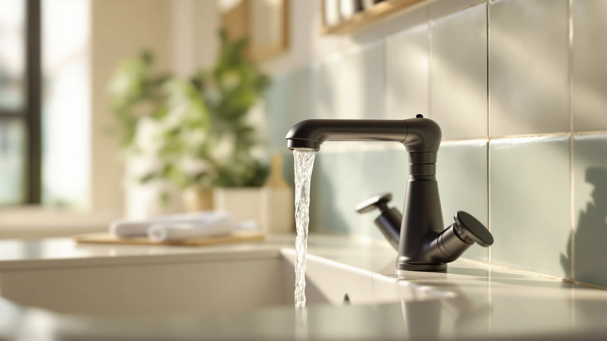

How to Install Moen Bathroom Faucets: Complete Guide (2026)
Prices and picks verified as of October 2026. Independent, reader-supported reviews.


Things to Know Before You Buy
- Most single-handle Moen faucets fit a standard single-hole sink deck, but some centerset and widespread models need extra hole spacing, so measure your sink before you order a replacement.
- Shutting off the hot and cold valves under the sink is enough. You do not need to shut off water to the whole house.
- Old supply lines corrode and crack over time. Replacing them with new braided lines during the swap avoids a second repair job a few months later.
- A basin wrench makes reaching the mounting nuts in the tight space behind a sink far easier than a standard wrench.
- Plan for 30 to 60 minutes if the new faucet matches your existing hole configuration, longer if it does not.
Knowing how to install Moen bathroom faucets yourself can save you $150 to $300 in plumber labor, and the job usually takes less than an hour once the water is off. Most Moen bathroom faucets share the same basic mounting hardware across single-handle and centerset models, so the steps below apply whether you are swapping in a brushed nickel single-hole faucet or a two-handle centerset.
You do not need professional plumbing experience for this job. You need a few common tools, a clear work area under the sink, and about 45 minutes of uninterrupted time. If your sink has a non-standard hole configuration, or the shutoff valves themselves are corroded and will not turn, that is when it makes sense to call a plumber instead of forcing the job.
What You'll Need
- Supplies: plumber's putty or silicone sealant, braided supply lines, PTFE thread seal tape
- Tools: adjustable wrench, basin wrench
Every item on this list is available at a hardware store for under $15 total, and none of it is specific to one faucet brand, so the same kit works whether you install a Moen bathroom faucet or a different brand next time.
Step 1: Shut off the water and drain the lines
Open the cabinet under the sink and find the two shutoff valves feeding your current faucet, one for hot and one for cold. Turn both clockwise until they stop. If you have never touched these valves, turn them slowly and check that no water seeps out around the stem as you go.
Once both valves are off, go back up to the faucet and turn the handles on to release any pressure trapped in the lines. Keep a small bucket or an old towel underneath, since a cup or two of water usually drains out of the lines even after the valves are closed. Getting this first step right matters. A dry, depressurized workspace makes every step after it go faster.
Step 2: Remove the old faucet
Reach under the sink and disconnect the supply lines from the bottom of the old faucet with an adjustable wrench. Expect a little resistance from mineral buildup on older connections. Once the lines are off, loosen the mounting nuts that hold the faucet body to the sink deck, usually with a basin wrench since a standard wrench will not clear the lip of the sink.
Lift the old faucet straight up and out once the nuts are free. You will likely find a ring of dried plumber's putty or an old rubber gasket left behind on the sink deck. Scrape this off completely with a plastic putty knife so the new Moen faucet sits flat against a clean surface.
Step 3: Prepare the new Moen faucet and sink deck
Wipe down the exposed sink deck with a damp cloth and let it dry fully before you set anything in place. Check the hole spacing on your sink against the base plate or mounting holes on the new Moen faucet. Single-handle Moen faucets typically need one hole, while centerset models need three holes roughly four inches apart.
Set the new faucet into the holes without sealing it yet. This dry fit confirms the gasket seats flush and the supply line connections reach the shutoff valves without stretching. If anything binds or does not line up, it is far easier to catch that now than after you have applied sealant.
Step 4: Install and connect the new faucet
Once the dry fit checks out, lay a thin bead of plumber's putty or silicone sealant around the base of the faucet if the manufacturer instructions call for it, then set the faucet back into the sink holes. Working from underneath, thread on the mounting nuts and tighten them with the basin wrench until the faucet no longer shifts, taking care not to overtighten and crack the sink deck.
Wrap PTFE tape clockwise around any threaded connections, then attach the braided supply lines to the faucet's inlet and to the shutoff valves. Hand-tighten each connection first, then add just a quarter turn with the wrench until it feels snug. This step is where most of the work to install a Moen bathroom faucet actually happens, since everything before it is removal and prep.
Step 5: Turn on the water and test for leaks
Turn the shutoff valves back on slowly, one at a time, and watch the connections underneath as the lines fill. Run the faucet through both hot and cold for a minute to clear any air and debris from the new lines before you consider the job finished.
With the water running, feel around every connection point, the supply line nuts, the mounting nuts, and the base of the faucet, for any dampness. A slow drip usually means a connection needs another quarter turn, not a full teardown. Dry everything with a towel and check again after 10 minutes to confirm nothing is seeping before you close the cabinet. A dry cabinet after this final check means your Moen faucet installation is done.
Common Mistakes to Avoid
The most common mistake when people install Moen bathroom faucets themselves is skipping the dry fit. Setting the faucet directly into sealant without first confirming the hole spacing and supply line reach means you discover a problem after everything is glued and tightened, which turns a 45-minute job into an afternoon of cleanup.
Overtightening is the second frequent error. A basin wrench gives you more leverage than you need, and cranking the mounting nuts as hard as possible can crack a porcelain sink deck or strip the threads on the faucet body. Tighten until the faucet stops shifting, then stop there.
Reusing old, brittle supply lines is another shortcut that backfires. Braided lines cost a few dollars each and take two minutes to swap, while a line that fails six months later means pulling everything apart again, often with water damage to clean up along the way.
Forgetting to flush the new lines before the first use leaves grit and metal shavings sitting in the faucet's aerator, which shows up as reduced flow or a sputtering stream within the first few days. Running the water for a full minute after installation clears that debris before it becomes a clog.
Finally, people skip the post-installation leak check because the faucet looks fine at first glance. A slow drip at a connection can take hours to show up as a visible puddle, so checking every joint by hand while the water runs, and again ten minutes later, catches problems before they cause real damage.
Our Top Picks
If your old faucet is the one failing, replacing it instead of repairing it is often the better move once a faucet is more than a few years old. These three picks cover a touchless upgrade, a budget-friendly genuine Moen faucet, and a premium centerset model, and all three install using the same steps described above.

Editor’s Pick
Automatic Touchless Bathroom Sink Faucet
A touchless sensor faucet that installs into the same single hole as a standard faucet, a straightforward swap if you want hands-free operation without changing your sink.
$82.99
Check Price on Amazon
Best Value
Moen Ronan Spot Resist Brushed
A genuine single-hole Moen faucet at a lower price point, built around the same mounting hardware covered in the steps above so the install is predictable.
$69.65
Check Price on Amazon
Premium Choice
Moen Idora Chrome Two-Handle Centerset
A two-handle Moen centerset faucet for sinks already drilled for three holes, a direct swap if your old faucet used the same layout.
$45.99
Check Price on AmazonDo I need to turn off the main water supply to install a Moen bathroom faucet?
No.
Do all Moen bathroom faucets fit the same sink holes?
Not always.
Frequently Asked Questions
Do I need to turn off the main water supply to install a Moen bathroom faucet?
Do all Moen bathroom faucets fit the same sink holes?
How long does it take to install a Moen bathroom faucet?
Can I reuse the old supply lines with a new Moen faucet?
What should I do if the new faucet leaks after installation?
Verdict
Once you understand how to install Moen bathroom faucets, the job comes down to five predictable steps: shut off the water, remove the old faucet, prep the sink deck, set and connect the new one, then test for leaks. Moen's hardware is consistent across most of its bathroom lineup, so the same basic process applies whether you choose a single-handle model or a two-handle centerset. Budget 45 minutes, a basin wrench, and a fresh set of braided supply lines, and most homeowners can finish without calling a plumber. The parts most likely to go wrong, a mismatched hole spacing or an overtightened mounting nut, are both avoidable with a quick dry fit before you seal anything. If your sink already matches a standard Moen hole configuration, a brushed nickel pick like the Moen Ronan above is a reliable, affordable place to start, and the install itself should take less time than a trip to the hardware store.